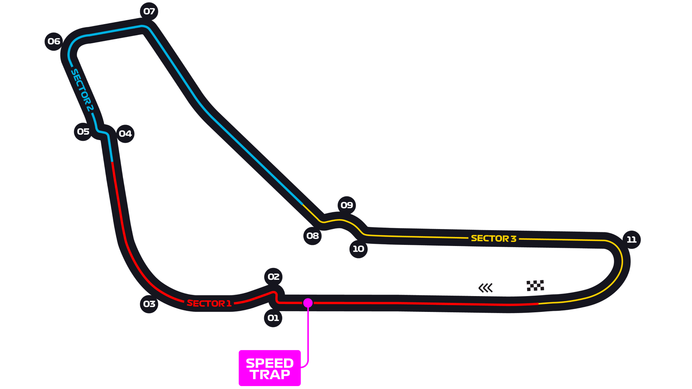

Autodromo Nazionale Monza Circuit Guide
The Temple of Speed. The lowest-downforce configuration of the year: long straights, heavy braking into chicanes, and the fastest average speed on the calendar. Cars are trimmed out to the point of being nervous under braking.
Circuit map

Corners that matter
Turns 1–2 — Variante del Rettifilo
Huge braking zone from ~340 km/h. The classic passing spot and the classic lap-one flashpoint.
Turns 4–5 — Variante della Roggia
Second-best passing chance; a late lunge here often decides a place.
Turns 6–7 — Lesmo 1 & 2
Quick, blind, unforgiving rights where a trimmed car feels its lack of downforce.
Turn 11 — Parabolica (Curva Alboreto)
Long, loaded right onto the main straight — exit speed here sets up the overtake into Turn 1.
Where the passes happen
Among the easiest on the calendar. Two long DRS runs into heavy braking zones mean slipstream trains, late lunges and genuine multi-car battles. Track position matters far less than usual.
What it does to the tyres
Low lateral energy but severe braking loads; usually the softest end of the range and often a straightforward one-stop. Rear locking and flat-spots under braking are the thing to watch.
Worth knowing
Circuit notes
- Monza has hosted a Grand Prix in every World Championship season bar one (1980) since 1950.
- Barrichello's 2004 lap remains one of the longest-standing records in the sport.
- The old banking still stands beside the current circuit and is a reliable piece of colour.